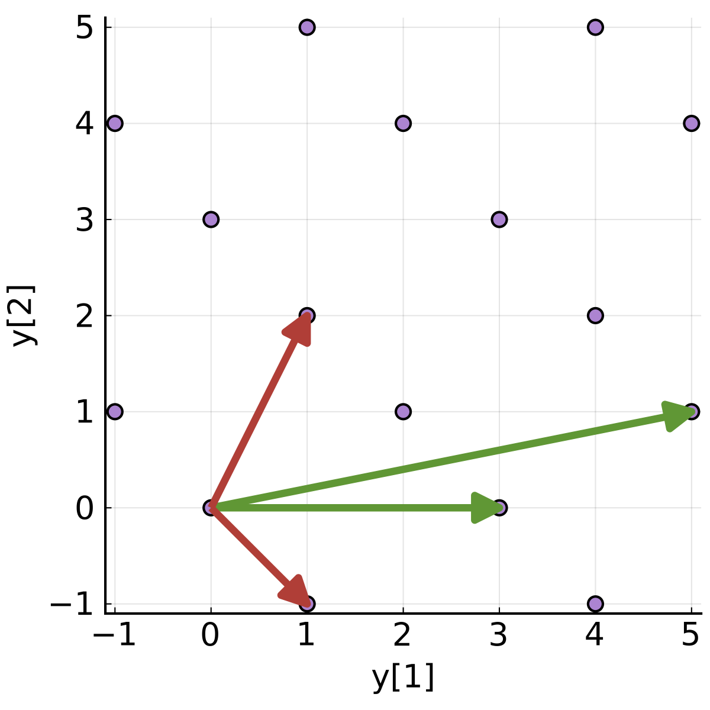

Cryptography is based on problems that are hard to solve in general, but easy to solve with additional information. One such problem is the difficulty of factoring the product of two large prime numbers. In this case the additional information which makes factoring easy is one of the prime numbers. For the large numbers used in cryptography today, someone who does not have either of the prime factors can not find them, even with very powerful computers. Systems such as RSA which are based on prime factorization are considered secure, though attacks using lattice reduction have been found when library designers or users do make a mistake and reveal too much information.
Another early cryptosystem was based on the subset-sum (or knapsack) problem which was believed to be hard to solve unless one has side information (a permutation that makes the subset superincreasing). Unfortunately attacks were quickly found, including one using lattice reduction; these attacks make this system insecure.
Even though cryptography based on the hardness of finding prime factors is secure against current powerful computers, in 1994 it was found that if a powerful quantum computer could be built, it could easily find these factors and also break cryptography based on elliptic curves. After this quantum attack was found, a search began for problems that are hard even for quantum computers. Some researchers looked for lattices on which it is hard to do lattice reduction in both classic and quantum computers. These efforts resulted in a lattice-based standard being chosen in the final round of NIST's search for a cryptographic standard that is believed to be secure against attack from attack from future powerful quantum (and classic) computers.
Now, a warning! We will use linear algebra to illustrate lattices. If the matrix math feels menacing or intimidating, we encourage you to think of it as a sort of emoji for math nerds; sure it's fun to know what an emoji means, but you likely don't need to learn the meaning of every one. One matrix in particular (the last one, $B_{4D}$) is intentionally obscure and (essentially) impossible to visualize in an intuitive way other than as a matrix; that difficulty is the reason it's included. If it helps, consider the difficulty of understanding matrix math as representing how a computer feels about lattice problems: they are difficult.
It's clear that lattice reduction is a powerful tool, but what is it? Intuitively, a lattice is a regular set of points, such as the purple points in the figure above. A lattice is generated using a basis; the green arrows in the figure represent one basis for the purple lattice. Each purple point can be found by adding some integer combination of the green arrows. Every lattice can be generated by many bases; in the figure the red arrows illustrate another basis for the lattice. Lattice reduction is the process of taking a given lattice basis (such as that represented by the green arrows), and finding a basis with components that are shorter and closer to orthogonal (such as the basis represented by the red arrows). Lattice cryptographers represent a basis with a basis matrix, such as in the following matrices for the green and red bases in the figure:
$$B_{green} = \left[ \begin{array}{rr} 5 & 3 \\ 1 & 0
\end{array}\right] \;, \;\;\;\;\; B_{red} = \left[ \begin{array}{rr} 1 & 1 \\ -1 & 2
\end{array}\right] \;. $$
Each column of these matrices is represented by an arrow in the figure. In fact, each column of $B_{red}$ can be represented by an integer combination of the columns of $B_{green}$, and vice-versa. If you'd like an exercise, find the matrix $T$ such that $B_{red} =B_{green} T$; this matrix $T$ is a unimodular matrix.
Lattice reduction looked pretty easy for the green and red bases above; what makes a basis hard for a powerful computer to do lattice reduction on? One thing is using much higher dimensional bases than the two-dimensional examples shown so far, say one hundred dimensions or more; another thing that makes a basis hard to reduce is using basis elements of much higher bit depth, for example sixty-four bits or more. The basis matrix $B_{4D}$ below has more dimensions (four) than our previous examples, and also has elements of much higher bit depth than previous. Even though the lattice that this matrix represents is impossible for a human to visualize in the same easy way as the two-dimensional lattice in the figure above, it is easy for a not-so-powerful computer to reduce. For problems that are hard (hopefully impossible!) for a powerful classic or quantum computer to reduce, the number of dimensions must be increased; see latticechallenge.org/ for examples of harder problems.
$$B_{4D} = \left[ \begin{array}{rrrr} 6714169179 & 3904382587 & 1484928972 & 158973427 \\ 222240594 & 1865961114 & 6291396082 & 9157617360 \\ 878128680 & 3247508428 & 6192395433 & 4340458729 \\ 933087331 & 3249492973 & 359041762 & 4539344643 \end{array}\right]$$
Despite the significant step of a lattice-based standard for public-key encryption, lattice cryptography is still in early stages, and is not nearly as easy to use as older technology such as eliptic-curve cryptography. Many who visit this site are interested in decentralizing technologies such as that used in blockchains. The lack of educational material, the larger key sizes, and less-developed technology are likely among the reasons that blockchains that use lattice cryptography do not yet (early 2023) appear to be an active area of research for academic cryptographers. Instead, they are focused on constructing and attacking post-quantum cryptosystems, fully homomorphic encryption, and functional encryption; the only known constructions of the latter two require lattice cryptography. These technologies separate encryption and computation, while preserving privacy. These important new capabilities enabled by lattice cryptography will be a continuing area of interest for cryptographers and others interested in privacy, even if quantum attacks on classic cryptography never become practical.
The title above is "What is Lattice Cryptography?" For a more complete answer to this question see the further reading below:
- "A Decade of Lattice Cryptography" by Chris Peikert is a mathematical intro to the SIS and LWE problems, which are at the core of lattice cryptography.
- For introductory material, see the videos from the "Lattices: Algorithms, Complexity, and Cryptography Boot Camp" from the Simons Institute.
- fplll is a powerful C++ library implementing lattice algorithms and aimed at cryptanalysis. Results from this library are used to estimate the power of future powerful computers and hence to decide what paramters (such as the bit depth and lattice dimension) of cryptosystems so as to allow them to be secure for many years to come.